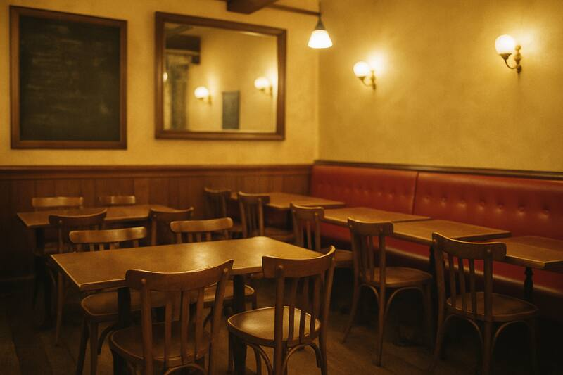
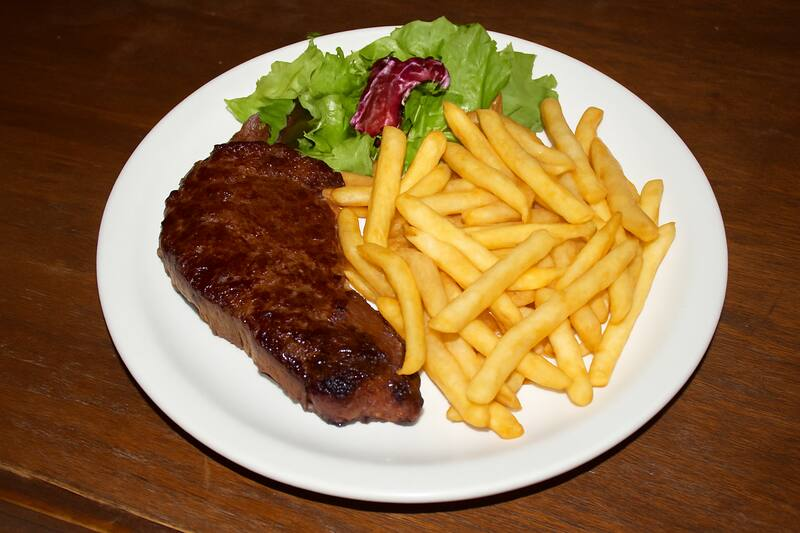
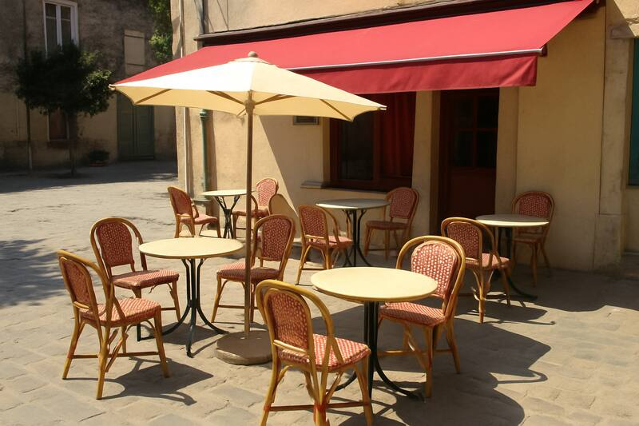

BienvenueLe Comptoir de Léon vous accueille dans une ambiance chaleureuse pour déguster une cuisine traditionnelle faite maison avec des produits frais et locaux. Formule du midi à 15,90 €. Terrasse aux beaux jours !    Quelques plats de notre carte
RéservationsGroupes et repas d'entreprise jusqu'à 40 personnes. Réservation par téléphone uniquement. |
Contactez-nous :
02 00 00 00 00 4 place du Marché imaginaire, 56000 Vannes Horaires :
Du mardi au samedi, 12h-14h et 19h-22h — fermé dimanche et lundi Formulaire de contact
Nom : Email : Message : Vous êtes le visiteur n° 004817
|